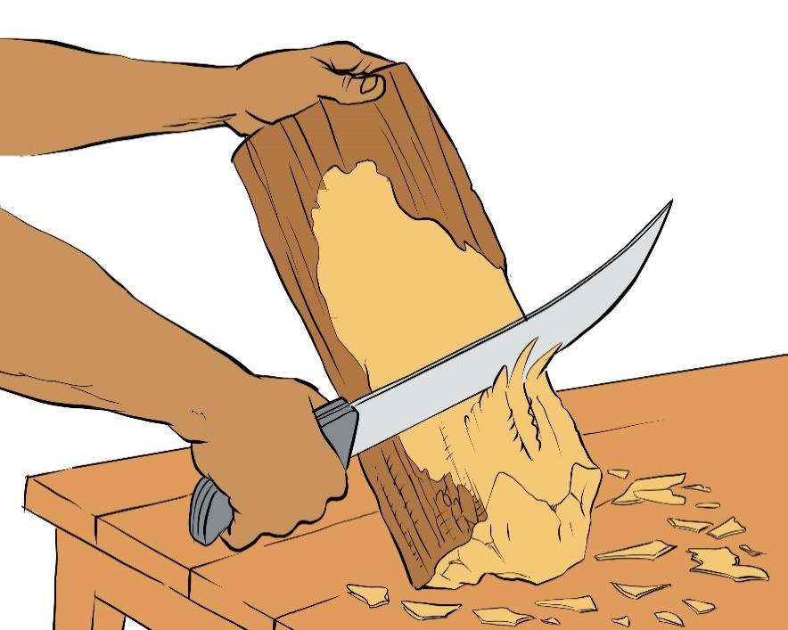
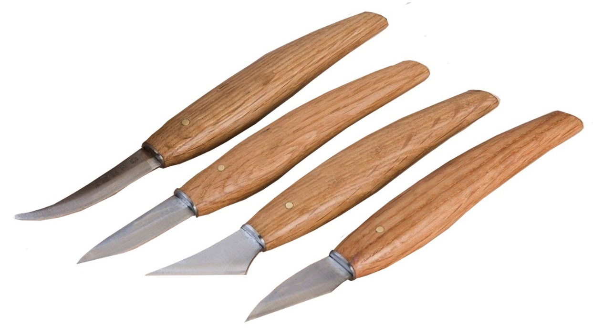

Carving knives: These are tools with sharp cutting edges. They are specialised to pare, cut and smoothen wood to a required sculpture form. Figure 5.20 shows carving knives.

Steps to follow when making a sculpture by using wood material
The following are the steps to follow when sculpturing an object using wood materials: